Lecture 5 | PUFY 1100 A31 Sustainable Systems 12953
Fossil Fuels become Materials.
Material systems built from carbon.
Burn + Build.
Fossil fuels are burned for energy; they are also transformed into materials.
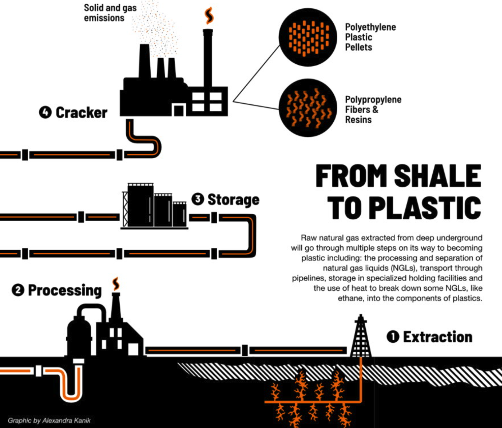
Shell Polymers Monaca — Shell’s petrochemical complex in Potter Township, Beaver County, PA.
Ethane → Ethylene → Polyethylene — the facility cracks ethane derived from natural gas and produces polyethylene.
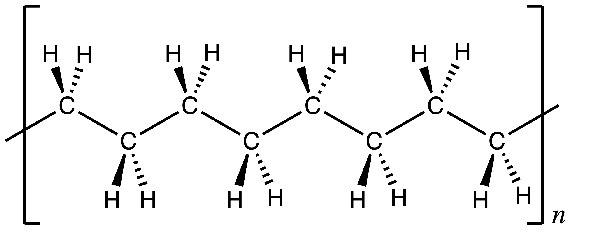
→ OIL / NATURAL GAS
→ ETHANE / NAPHTHA
→ ETHYLENE / PROPYLENE
→ POLYMERIZATION
→ PLASTIC
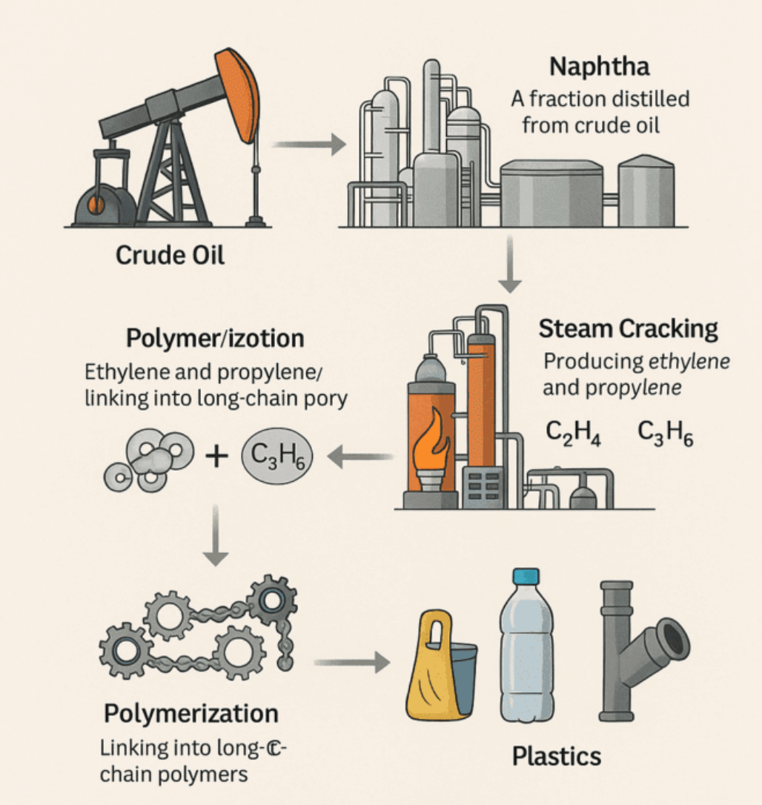
PE · PP · PVC · PET · PS
Rigid / Flexible
Clear / Opaque
Soft / Hard
Disposable / Durable
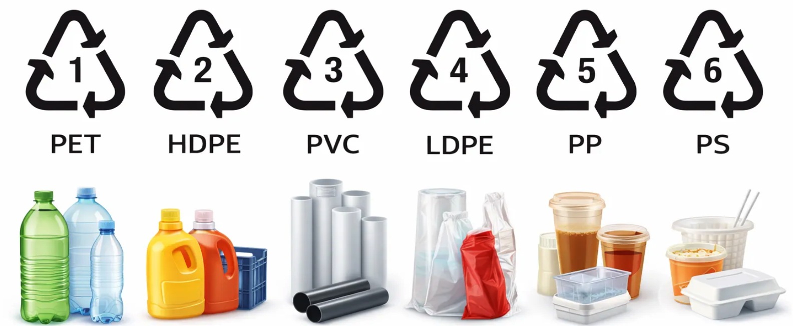
LIGHTWEIGHT · MOLDABLE · WATERPROOF
INSULATING · SANITARY · INEXPENSIVE
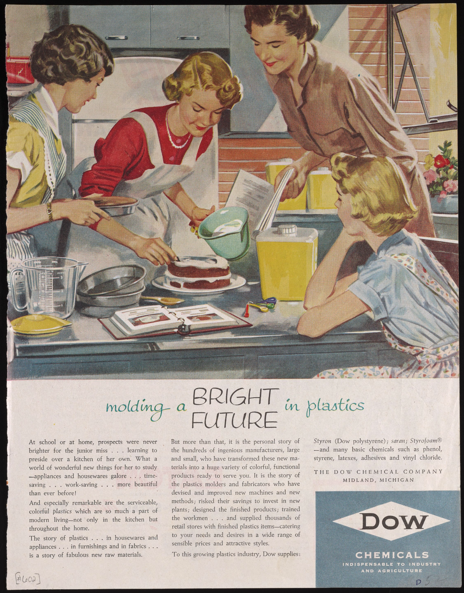
IVORY · HORN · SHELLAC · TORTOISESHELL
WOOD · GLASS · METAL
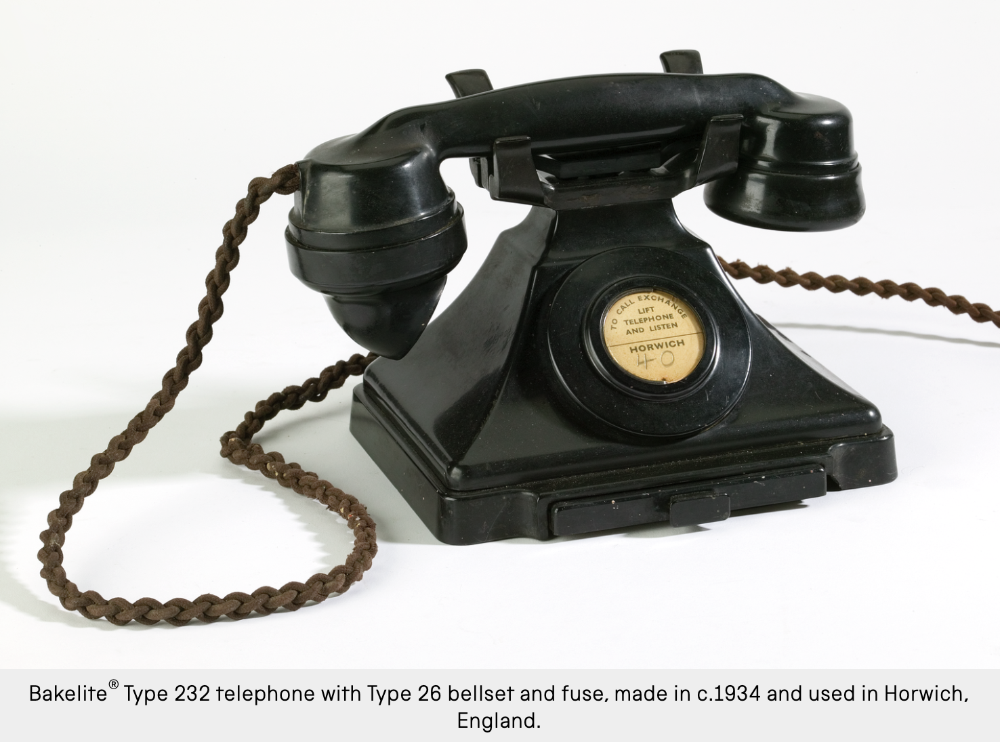
World War II accelerates synthetic-material development and production.
NYLON · ACRYLIC · POLYETHYLENE
New materials become industrial systems.
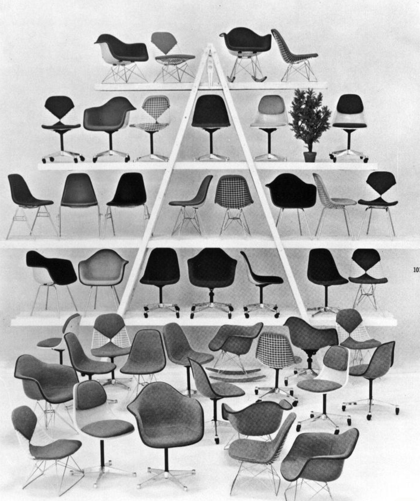
Production capacity moves into consumer markets.
HOME · CLOTHING · TOYS · FURNITURE · FOOD
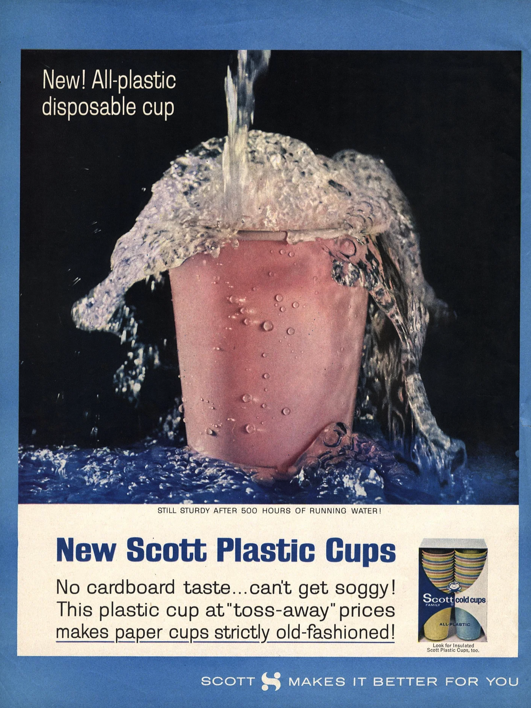
Plastic production moves from millions to hundreds of millions of tonnes per year.
A new material becomes a global material system.
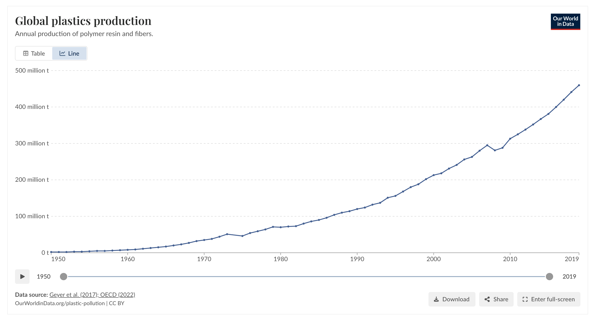
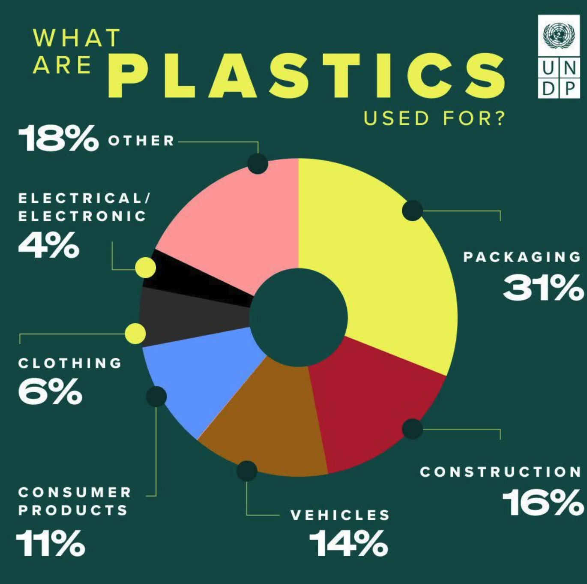
EXTRACTION → PROCESSING → PETROCHEMICALS
→ MANUFACTURING → CONSUMPTION → DISPOSAL
An object is one moment within a much larger system.
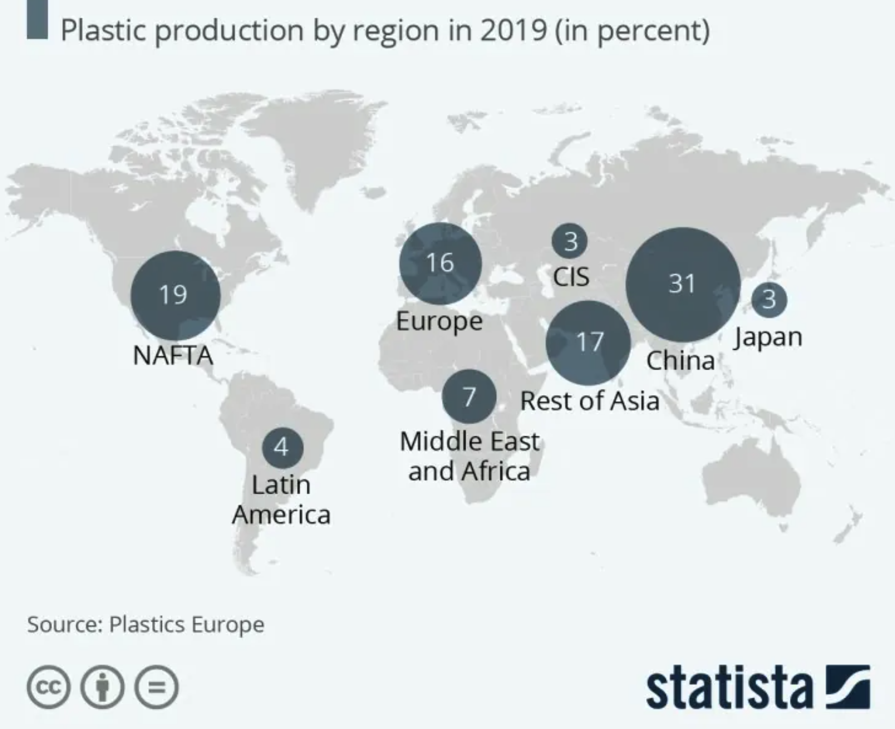
WASTE ≠ POLLUTION
Generating plastic waste does not necessarily mean it enters the environment.
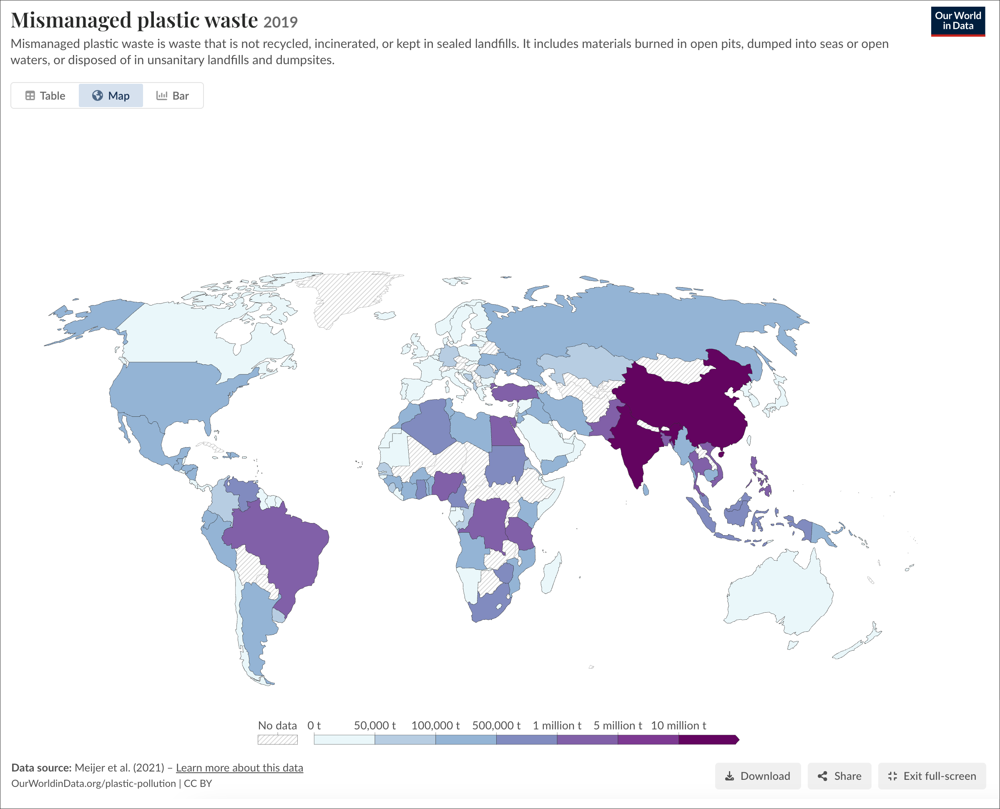
Once plastic enters water, its geography changes.
Local waste becomes a global flow.
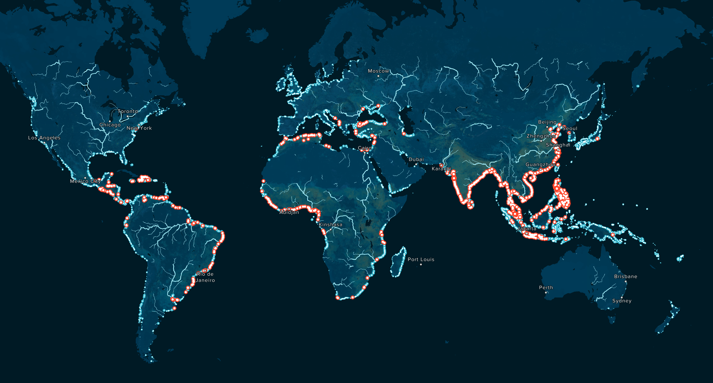
LANDFILL · INCINERATE · RECYCLE
EXPORT · LEAK
Discarding material changes its location or form.
But it does not make it disappear.
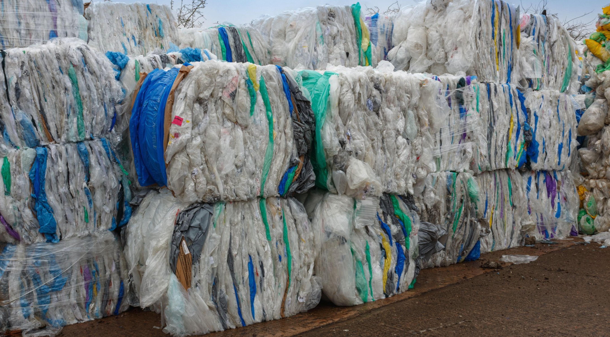
We use plastic for minutes.
It can persist for generations.
What happens when a material designed to outlive us becomes ordinary?